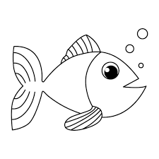

Los japoneses siempre han gustado el pescado fresco. Pero las aguas cercanas a Japon no han tenido mucho peces por decadas. Asi que para alimentar a la pobracion japonesa, los barcos pesqueros fueron fabricados mas grandes para ir al mar.
Mientras mas lejos iban los pescadores, mas era el tiempo que les tomaba regresar a estregar el pescado. Si el viajero tamaba varios dias, el pescador ya no estaba fresco.
Para resolver el problema, las compañias instalaron congeladores en los barcos pesqueron. Asi podrian pescar y poner los pescados en los congeladores. Sin embargo, los japoneses pudieron percibir la diferencia entre el pescado congelado y el fresco y no les gustaba el congelad; por lo tanto, tenian que venderlo mas barato.
Las compañias entonces instalaron tanques para los pescados en los barcos. Podrian asi pescar los peces, meterlos en los tanques y maretnerlois vivos hasta llegar a la costa.Pero despues de un tiemp'o los pescados dejaban de moverse en el tanque. Estaban aburridos y cansados, aunque vivos. Los consumidores japoneses tampbien notaron la diferencia del sabor porque cuando los pescados dejan de moverse por dias, pierden el sabor fresco.

Para mantener el sabor fresco de los peces, las compañías pesqueras ponen a los peces dentro de los tanques en los botes, pero ahora ponen también un itiburón pequeño!
Claro que el tiburón se come algunos peces, pero los demás llegan muy, pero muy vivos. ¡Los peces son desafinados! Tienen que nadar durante todo el trayecto dentro del tanque, para mantenerse vivos.
Cuando alcances tus metas proponte otras mayores. Nunca debes crear el éxito para luego acostarte en él.
Así que invita a un "Tiburón a tu tanque" y descubre qué tan lejos realmente puedes llegar.
Unos cuantos "tiburones" te harán conocer tu potencial, que no te asusten sus "dientes ni sus trampas", tú sigue alerta, pero siempre "fresco".
Siempre habrá tiburones a donde vayas.

Angeles Varela Marcos Daniel
Angeles Varela Marcos Daniel 2IM11